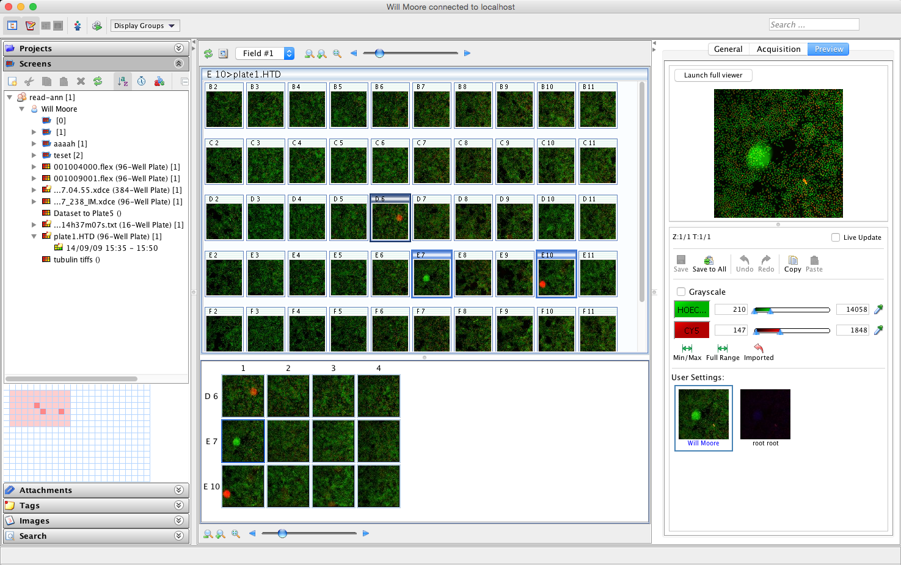
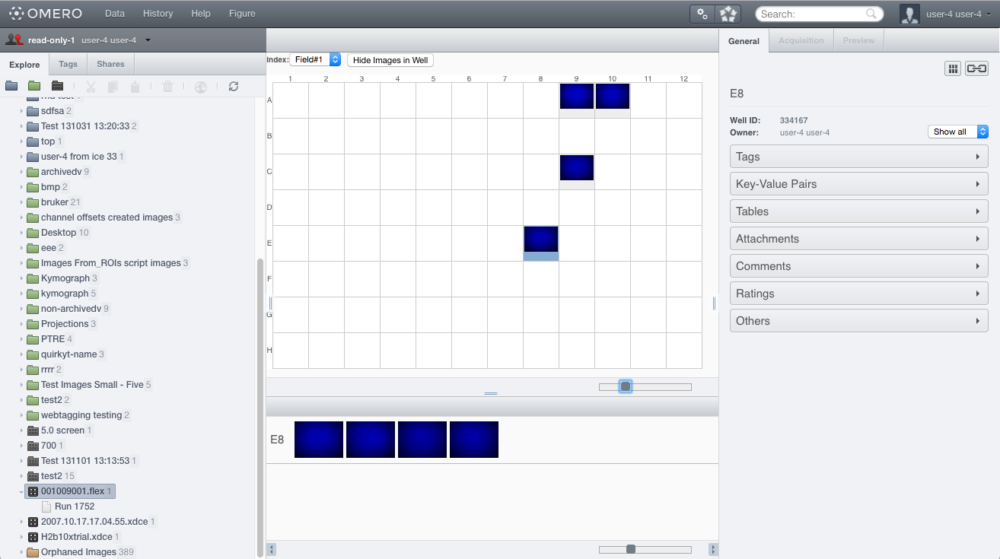
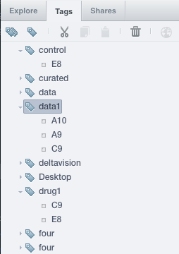

SPW 'Grid View' layout
Tuesday Group Meeting
15th November 2016
Will, Dominik, Gus



SPW Phase 1 (5.3.0 m5)
Known issues / TODOs
- Pagination: handle lots of Wells with many Fields
- Searching for Wells
- Usability:
- No Preview panel for Wells
- No existing annotations - Thumbnail caching
Thumbnail caching
Break cache using version: 'src' ?version=1 => ?version=2- Save settings to all Dataset/Plate
- Browser 'src' ?version=[random]
- Loads thumbnail from server
- New thumbnail version created: 1 => 2

Spacial "bird's eye" view
- Don't show coordinates
- Thumbnails not 'actual size'
- Drag to select multiple images
The End!
More Info on Trello Card
More Info on Trello Card